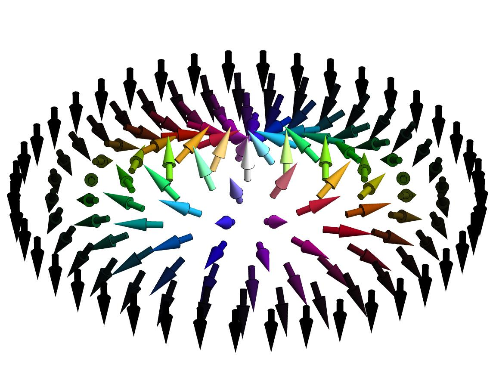
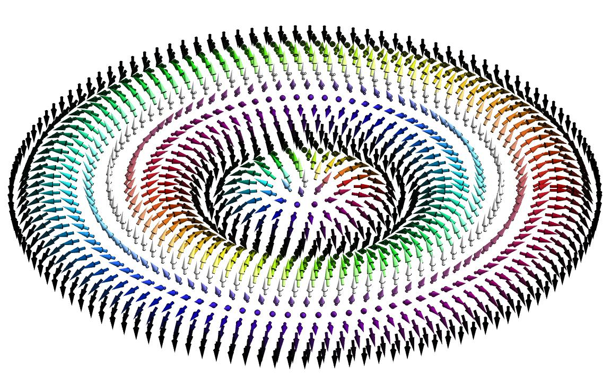
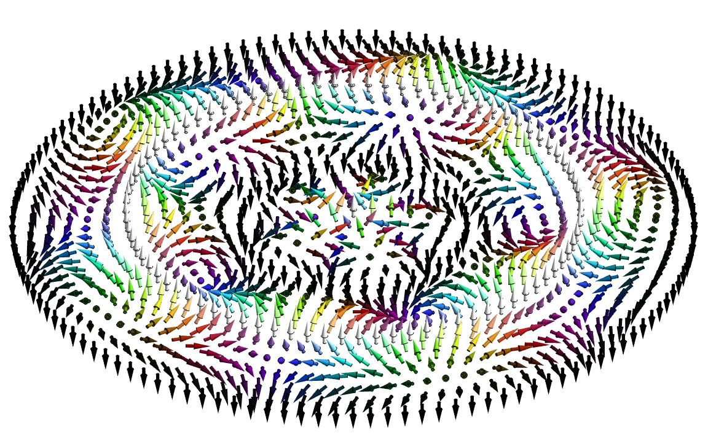

"Physics is surreal"
I am an undergrad physics student at the University of New Hampshire (UNH), USA.
Before I transferred to UNH, I was at the Saitama University, Japan.
I have been working on mutiple projects in condensed matter theory, and interested in topics such as magnetism, superconductivity, topological phases of matter etc.
I am also genuinely interested in any field of theoretical physics, experimental physics, computational physics,
mathematical physics, biophysics, information theory, etc.
I am going to apply PhD this winter, and have been looking for the best fit for my career as a future theoritical physicist.
You can find my CV from here.
My hometown is Tokyo, Japan. So my first language is Japanese.
I love physics. I especially love to talk about physics with anyone in the world.

Publications
GPTArticleExtractor: An Automated Workflow for Magnetic Material Database Construction
Authors: Yibo Zhang, Suman Itani, Kamal Khanal, Emmanuel Okyere, Gavin Smith, Koichiro Takahashi, Jiadong Zang | Journal: Journal of Magnetism and Magnetic Materials, 2024
View on ScienceDirectInertia in Skyrmions Confined to One-Dimensional Geometries
Authors: Koichiro Takahashi, Sergey S. Pershoguba, Jiadong Zang | Platform: arXiv
View on arXivPosters and Projects
Poster: Nonlinear Dynamics of Skyrmion in Helical Lanes
This poster presents my research on the current-driven dynamics of skyrmions confined in helical backgrounds.
View PosterPoster: Tight-binding modeling of altermagnet candidate MnTe
This poster presents my research on the tight-binding calculation of MnTe.
View PosterGallery





